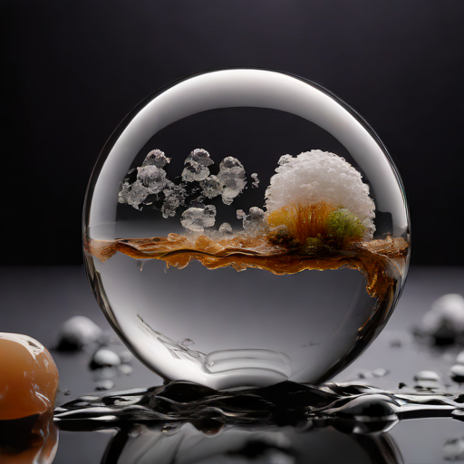
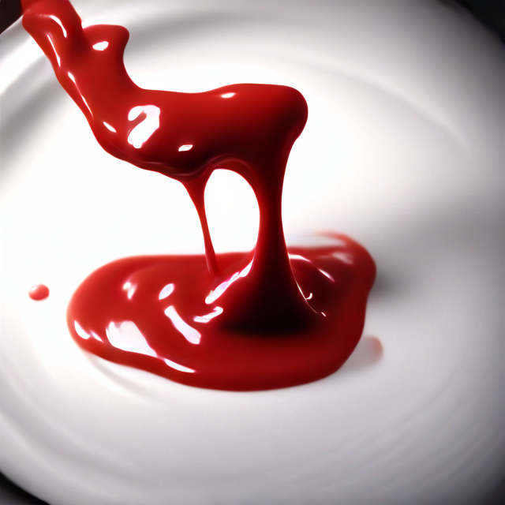
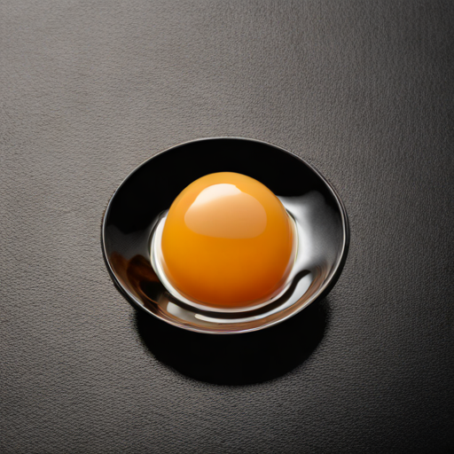
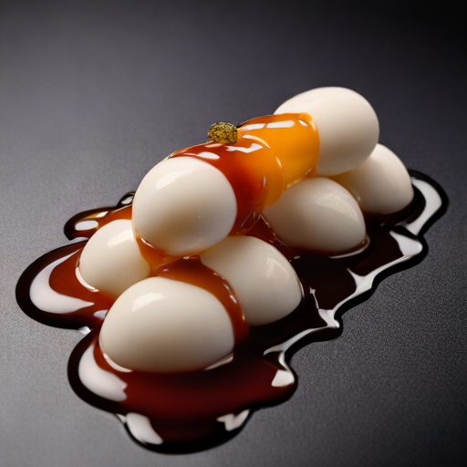
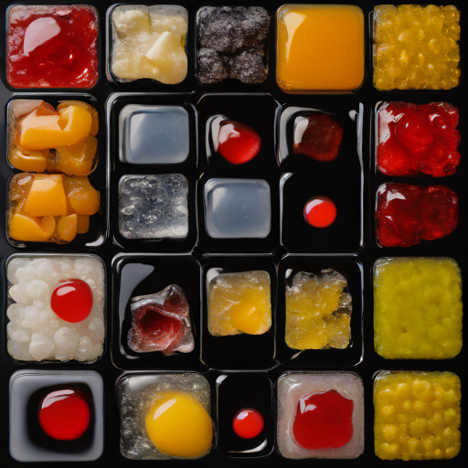
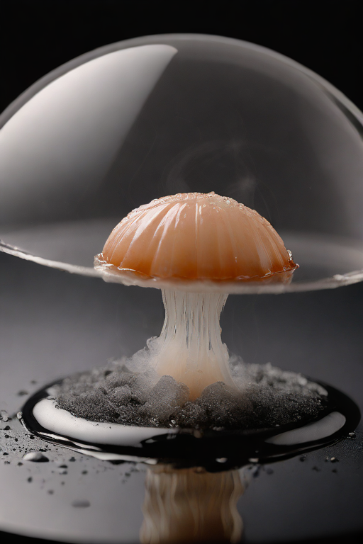
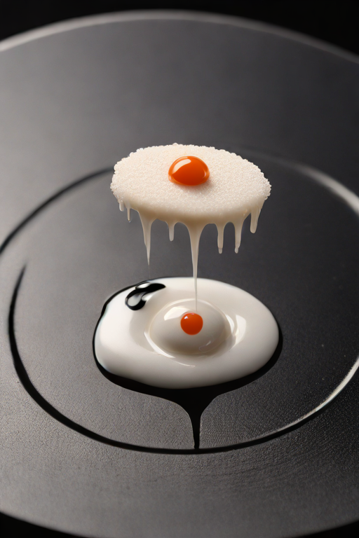
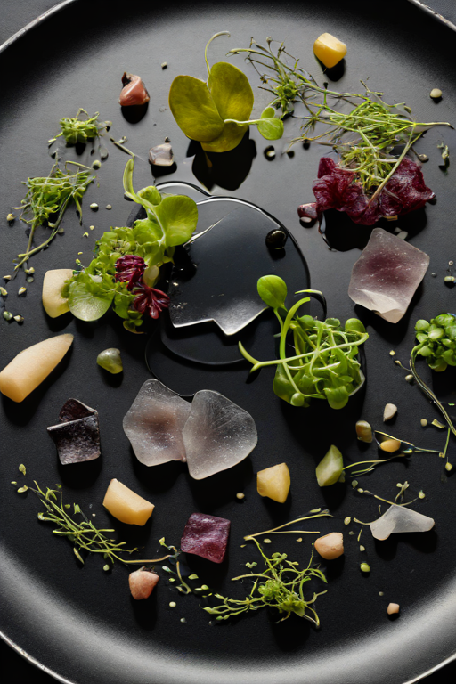
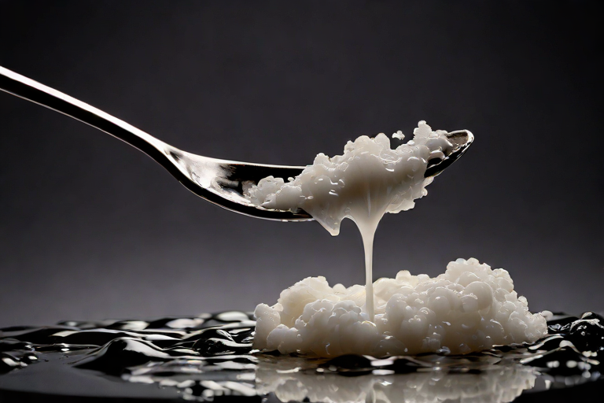

Dinner reduced to foam, gel, and a single meaningful smear. The portions are tiny and the intentions are enormous. Do not ask what the garnish is watching.
Cat. No. VII.4.01Amuse-Bouche, FrozenLatent diffusion, single pass · AI Slop, 2026

Cat. No. VII.4.02A Sphere, Containing WeatherLatent diffusion, single pass · AI Slop, 2026

Cat. No. VII.4.03Plated ScreamLatent diffusion, single pass · AI Slop, 2026

Cat. No. VII.4.04Yolk, SuspendedLatent diffusion, single pass · AI Slop, 2026

Cat. No. VII.4.05Foam, VertebralLatent diffusion, single pass · AI Slop, 2026

Cat. No. VII.4.06Tasting Menu, WatchingLatent diffusion, single pass · AI Slop, 2026

Cat. No. VII.4.07Under Glass, SmokingLatent diffusion, single pass · AI Slop, 2026

Cat. No. VII.4.08One Cloud, GarnishedLatent diffusion, single pass · AI Slop, 2026

Cat. No. VII.4.09Edible, ShatteredLatent diffusion, single pass · AI Slop, 2026

Cat. No. VII.4.10A Spoonful of SeaLatent diffusion, single pass · AI Slop, 2026